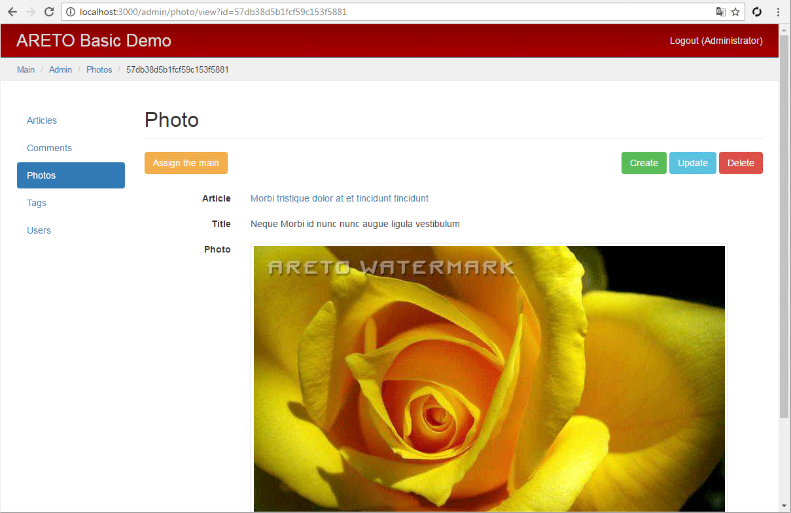

Админ модель фотографии
Класс модели наследуется от Photo из публичной части блога.
Модель фотографии состоит из трех атрибутов. Первый - это заголовок, содержащий описание фото. Второй - имя файла, в котором хранится изображение. И третий - ссылка на статью, которой принадлежит фото.

Исходные изображения, загружаемые пользователем, могут быть огромных размеров и различных типов.
Нет никакой необходимости хранить их в таком виде, поэтому они будут конвертироваться в единый формат.
Для этого используйте поведение ImageConverter, входящими данными для которого будет
модель File, описывающая уже загруженный файл. Свойство size определяет
максимальную высота или ширину, до которой масштабируется фото.
Помимо полноформатного изображения, на сайте необходимо отображать превью различных размеров.
Оптимальный путь - это создать отдельные файлы под каждый размер. Для этого используется
свойство neededThumbs, содержащее список требуемых размеров.
Для защиты авторского права или уникализации фотографии используется водяной знак,
который автоматически накладывается на каждое изображение.
В свойстве watermark укажите размер и соответствующий ему файл водяного знака.
Файлы могут напрямую отдаваться по ссылке, как статичные ресурсы, или только после проверки прав доступа.
В данном случае сконвертированное чистое изображение размещается в закрытой части сайта
(storeDir: path.join(__dirname, '../uploads/photos'))
и доступно только в модуле администрирования.
Превью, с наложенным водяным знаком и меньших размеров, размещаются в директории ресурсов публичной части блога
(thumbDir: path.join(__dirname, '../../../web/photos')).
Свойство filenameAttr определяет атрибут модели, в котором будет храниться имя файла.
module/admin/model/Photo.js
Отношение relArticle определяет статью, с которой связано фото.
module/admin/model/Photo.js